Soru 1Cevap: E
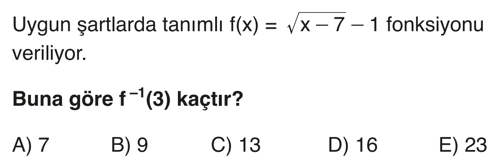
Çözüm
- $f^{-1}(3)=a\iff f(a)=3$.
- $\sqrt{a-7}-1=3\Rightarrow\sqrt{a-7}=4$.
- $a=23$ (E).
Cevap: E
Soru 2Cevap: D
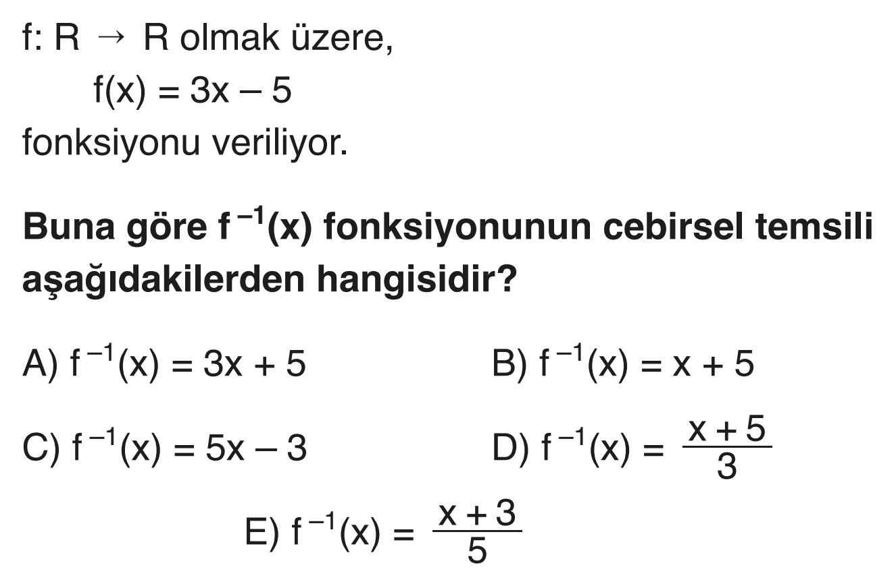
Çözüm
- $y=3x-5$.
- $x=\dfrac{y+5}3$.
- $f^{-1}(x)=\dfrac{x+5}3$ (D).
Cevap: D
Soru 3Cevap: A
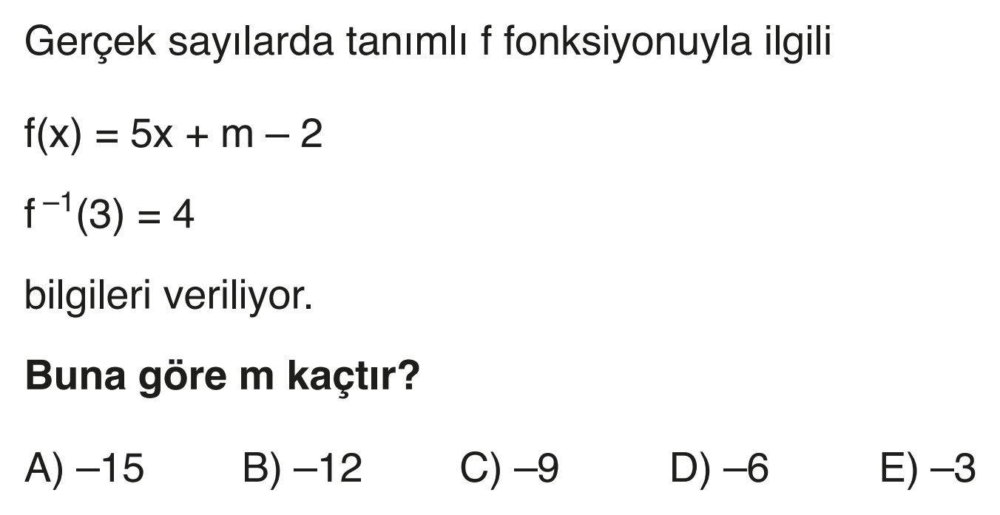
Çözüm
- $f^{-1}(3)=4\iff f(4)=3$.
- $20+m-2=3$.
- $m=-15$ (A).
Cevap: A
Soru 4Cevap: E
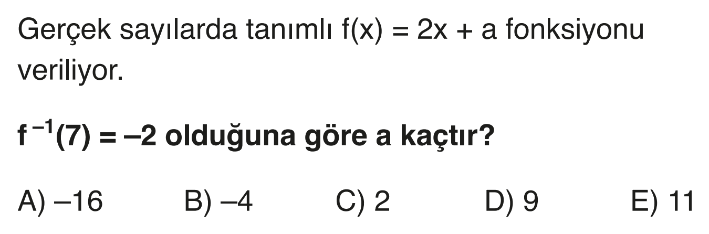
Çözüm
- $f^{-1}(7)=-2\iff f(-2)=7$.
- $2\cdot(-2)+a=7$.
- $a=11$ (E).
Cevap: E
Soru 5Cevap: E
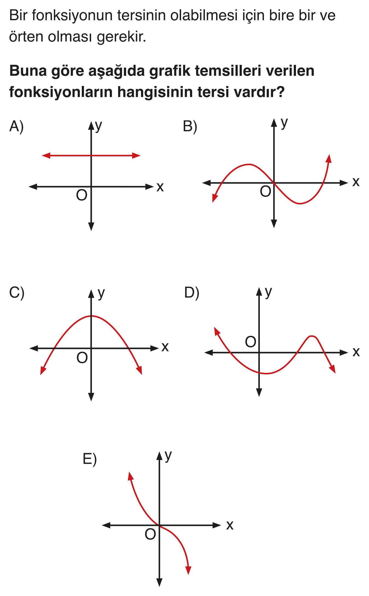
Çözüm
- Tersin olması için fonksiyon bire bir ve örten olmalı: her yatay doğru grafiği tam bir kez kesmeli.
- A sabit, B, C, D'yi bazı yatay doğrular birden fazla kez keser.
- Sürekli azalan ve tüm değerleri alan E'nin tersi vardır.
Cevap: E
Soru 6Cevap: D
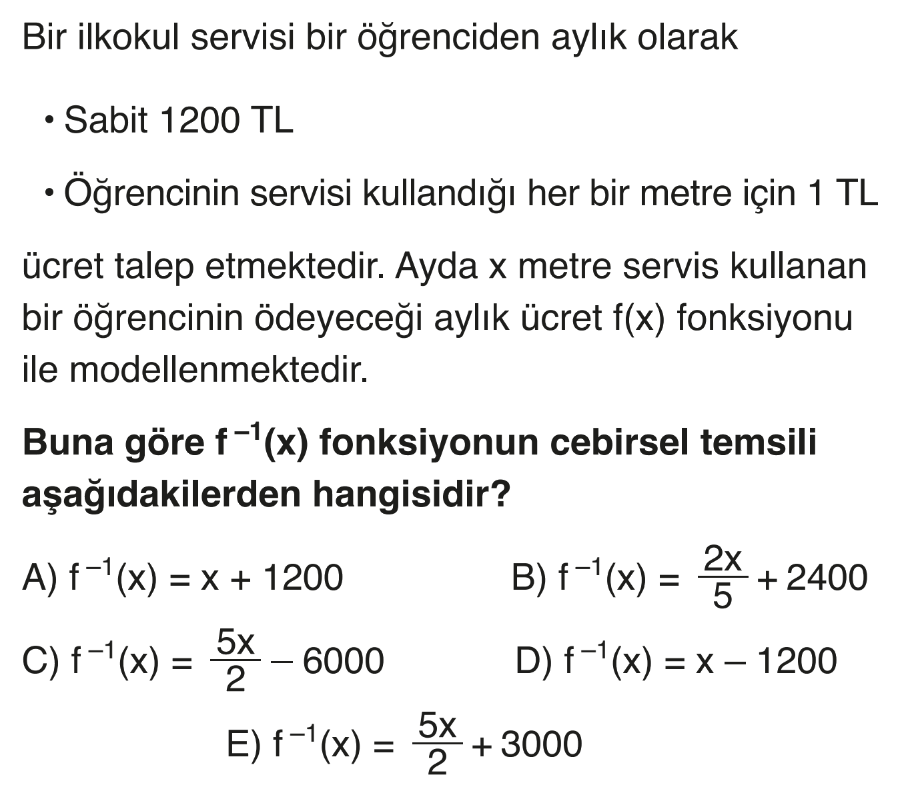
Çözüm
- Aylık ücret $f(x)=1200+x$.
- $y=1200+x\Rightarrow x=y-1200$.
- $f^{-1}(x)=x-1200$ (D).
Cevap: D
Soru 7Cevap: B
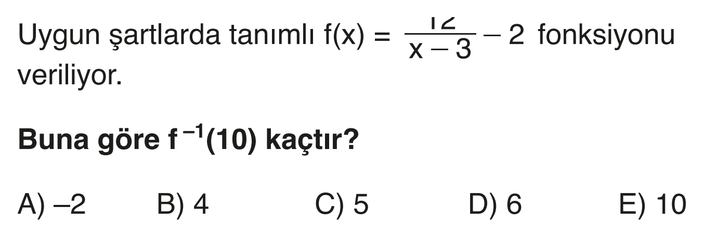
Çözüm
- $f^{-1}(10)=a\iff f(a)=10$.
- $\dfrac{12}{a-3}-2=10\Rightarrow\dfrac{12}{a-3}=12$.
- $a-3=1\Rightarrow a=4$ (B).
Cevap: B
Soru 8Cevap: B
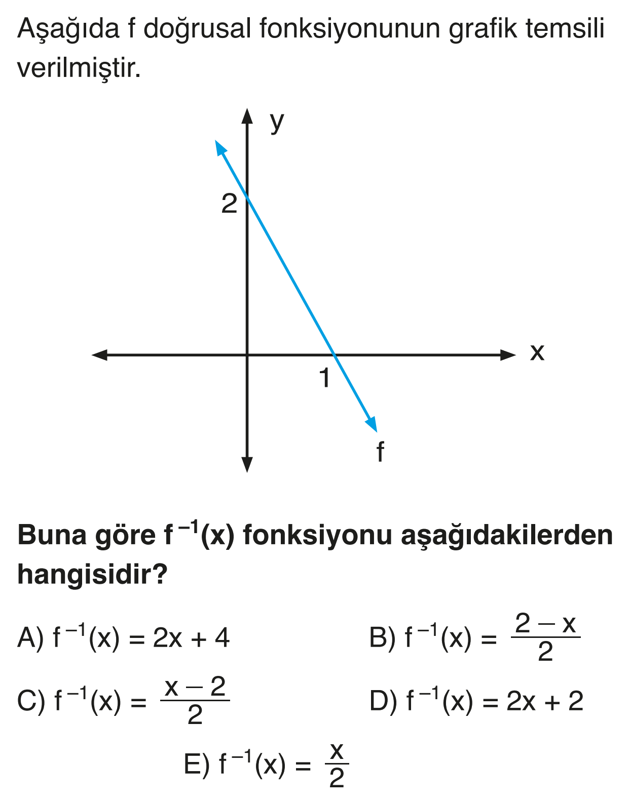
Çözüm
- Doğru $(0,2)$ ve $(1,0)$'dan geçer: $f(x)=2-2x$.
- $y=2-2x\Rightarrow x=\dfrac{2-y}2$.
- $f^{-1}(x)=\dfrac{2-x}2$ (B).
Cevap: B
Soru 9Cevap: E
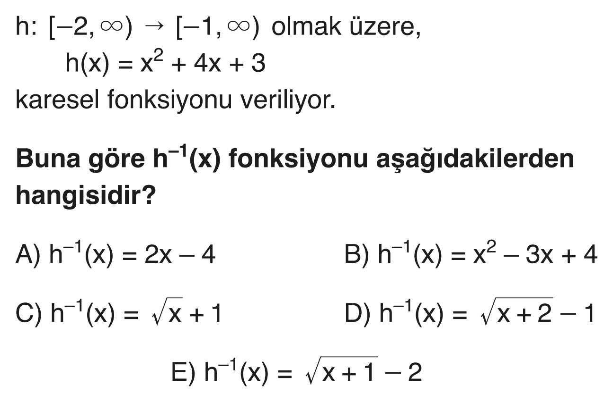
Çözüm
- $x^2+4x+3=(x+2)^2-1$; $x\ge-2$.
- $y=(x+2)^2-1\Rightarrow x+2=\sqrt{y+1}$.
- $h^{-1}(x)=\sqrt{x+1}-2$ (E).
Cevap: E
Soru 10Cevap: E
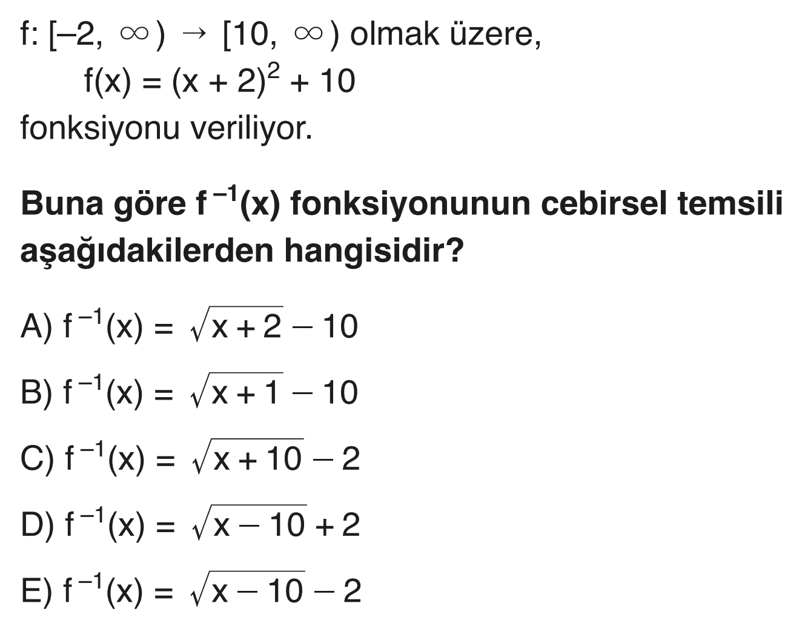
Çözüm
- $y=(x+2)^2+10\Rightarrow(x+2)^2=y-10$.
- $x\ge-2$ olduğundan $x+2=\sqrt{y-10}$.
- $f^{-1}(x)=\sqrt{x-10}-2$ (E).
Cevap: E
Soru 11Cevap: E
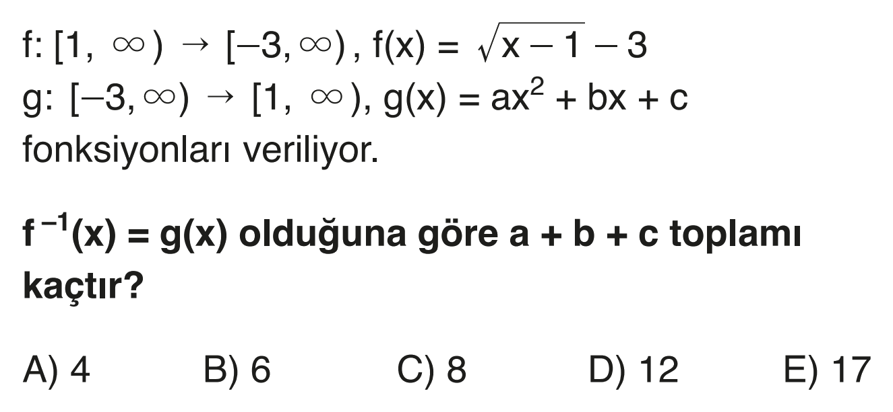
Çözüm
- $y=\sqrt{x-1}-3\Rightarrow\sqrt{x-1}=y+3\Rightarrow x=(y+3)^2+1$.
- $f^{-1}(x)=x^2+6x+10=g(x)$: $a=1$, $b=6$, $c=10$.
- $a+b+c=17$ (E).
Cevap: E
Soru 12Cevap: A
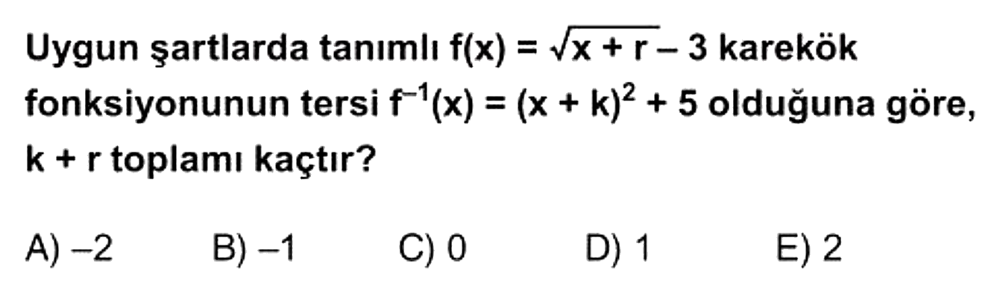
Çözüm
- $y=\sqrt{x+r}-3\Rightarrow x=(y+3)^2-r$.
- $(x+3)^2-r=(x+k)^2+5\Rightarrow k=3$, $r=-5$.
- $k+r=-2$ (A).
Cevap: A
Soru 13Cevap: E
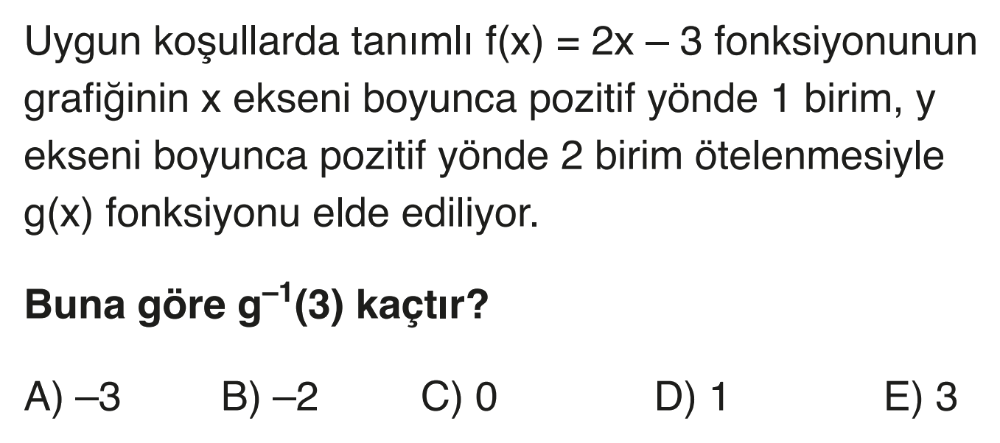
Çözüm
- 1 birim sağa, 2 birim yukarı: $g(x)=2(x-1)-3+2=2x-3$.
- $g^{-1}(3)=a\iff g(a)=3$.
- $2a-3=3\Rightarrow a=3$ (E).
Cevap: E
Soru 14Cevap: A
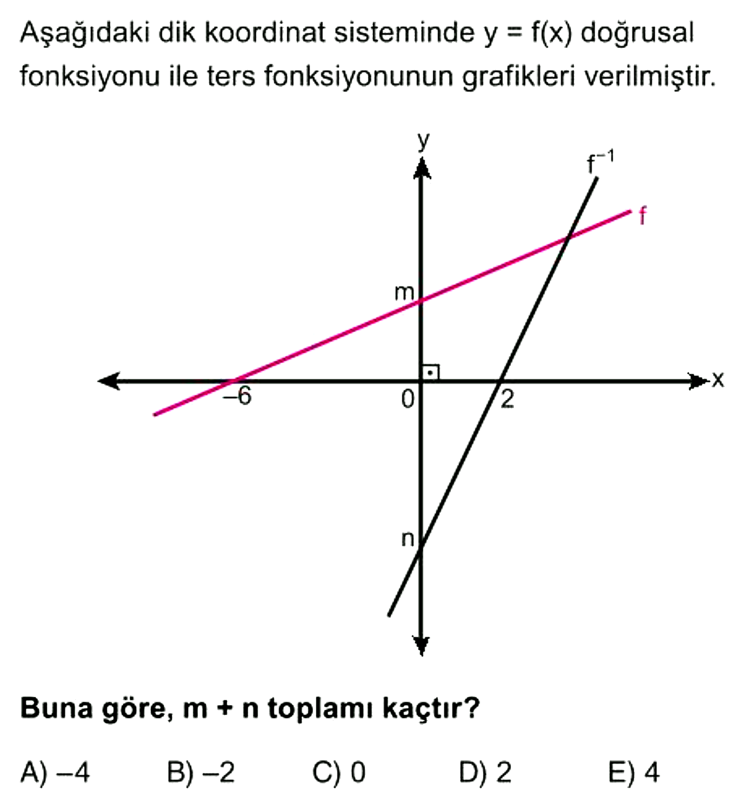
Çözüm
- $f$, $(-6,0)$ ve $(0,m)$'den geçer; $f^{-1}$ bu noktaların simetrikleri olan $(0,-6)$ ve $(m,0)$'dan geçer.
- $f^{-1}$'in $y$ eksenini kestiği nokta $n=-6$; $x$ eksenini kestiği nokta $2=m$.
- $m+n=-4$ (A).
Cevap: A
Soru 15Cevap: C
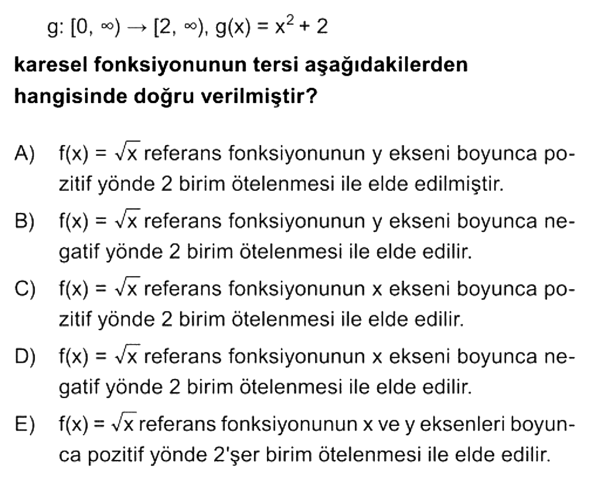
Çözüm
- $y=x^2+2$, $x\ge0\Rightarrow x=\sqrt{y-2}$: $g^{-1}(x)=\sqrt{x-2}$.
- $\sqrt{x-2}$, $\sqrt x$'in grafiğinin $x$ ekseni boyunca pozitif yönde 2 birim ötelenmesidir.
- C.
Cevap: C
Soru 16Cevap: D
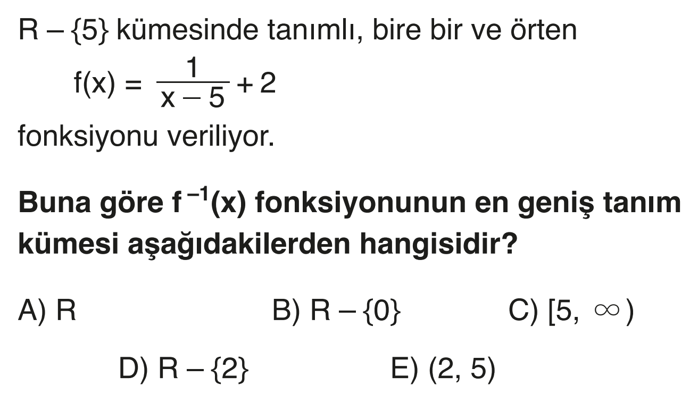
Çözüm
- $f^{-1}$'in tanım kümesi, $f$'nin görüntü kümesidir.
- $\dfrac1{x-5}\ne0\Rightarrow f(x)\ne2$: görüntü $\mathbb R-\{2\}$.
- $f^{-1}$'in en geniş tanım kümesi $\mathbb R-\{2\}$ (D).
Cevap: D
Soru 17Cevap: C
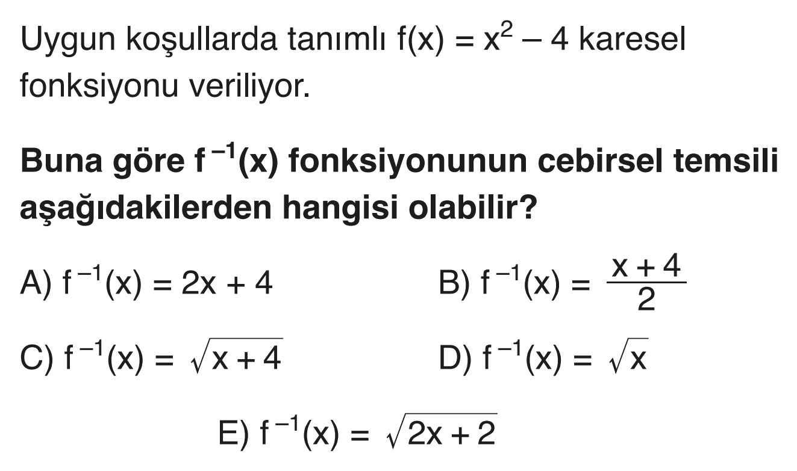
Çözüm
- Uygun tanım kümesi ($x\ge0$) seçilince $f$ bire bir olur.
- $y=x^2-4\Rightarrow x^2=y+4\Rightarrow x=\sqrt{y+4}$.
- $f^{-1}(x)=\sqrt{x+4}$ (C).
Cevap: C
Soru 18Cevap: C
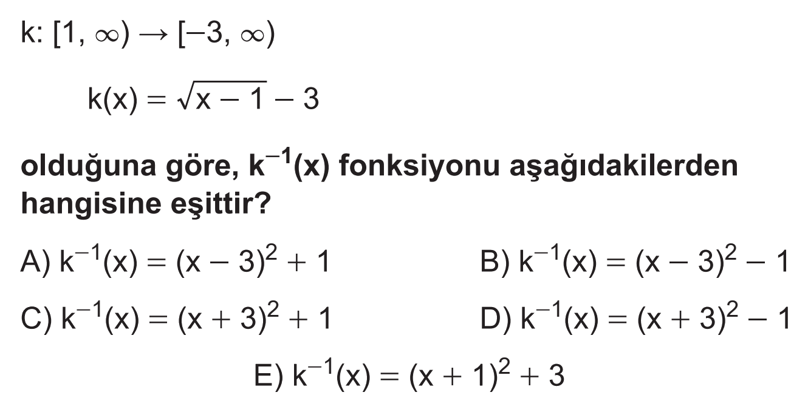
Çözüm
- $y=\sqrt{x-1}-3\Rightarrow\sqrt{x-1}=y+3$.
- $x-1=(y+3)^2\Rightarrow x=(y+3)^2+1$.
- $k^{-1}(x)=(x+3)^2+1$ (C).
Cevap: C
Soru 19Cevap: A
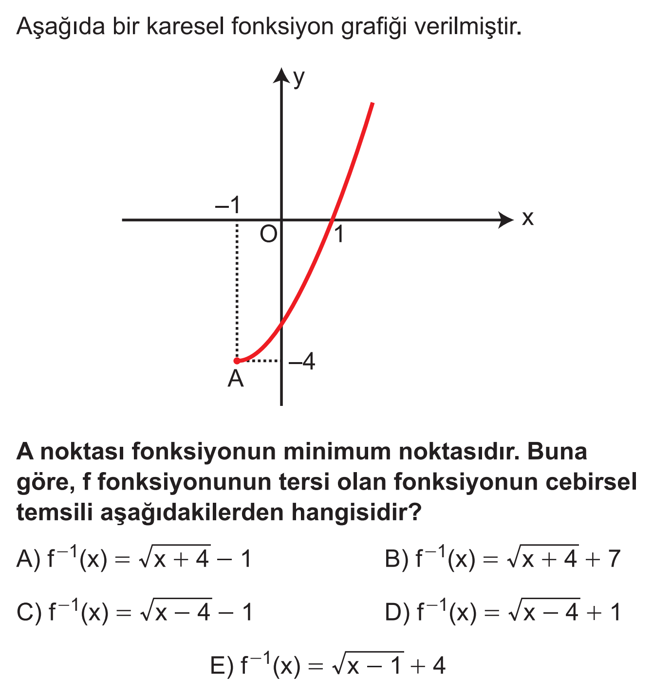
Çözüm
- Tepe $A(-1,-4)$: $f(x)=a(x+1)^2-4$; $(1,0)$'dan geçer: $4a-4=0\Rightarrow a=1$.
- Grafik $x\ge-1$ kısmı: $y=(x+1)^2-4\Rightarrow x+1=\sqrt{y+4}$.
- $f^{-1}(x)=\sqrt{x+4}-1$ (A).
Cevap: A
Soru 20Cevap: D
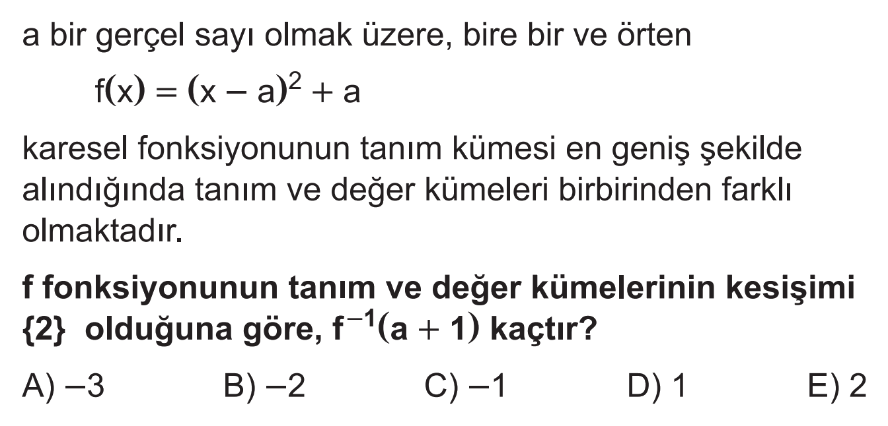
Çözüm
- $f$ bire bir ve tanım kümesiyle değer kümesi farklı olacaksa tanım kümesi $(-\infty,a]$, değer kümesi $[a,\infty)$ olmalı.
- Kesişim $\{a\}=\{2\}\Rightarrow a=2$: $f(x)=(x-2)^2+2$, $x\le2$.
- $f^{-1}(3)=x\iff(x-2)^2=1$, $x\le2\Rightarrow x=1$ (D).
Cevap: D